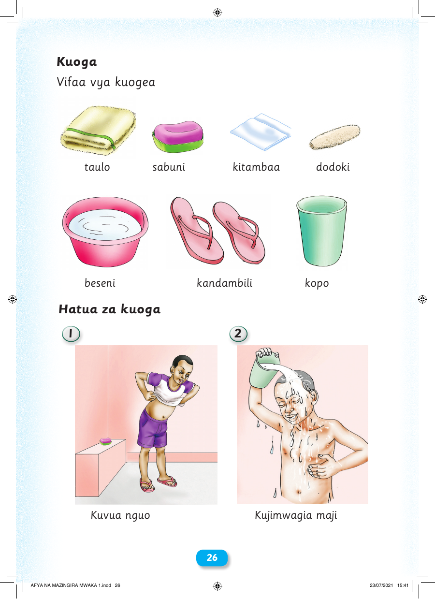

 26 Kuoga Vifaa vya kuogea taulo sabuni kitambaa dodoki beseni kandambili kopo Hatua za kuoga 1 2 Kuvua nguo Kujimwagia maji AFYA NA MAZINGIRA MWAKA 1.indd 26 23/07/2021 15:41 Kuoga Vifaa vya kuogea taulo sabuni kitambaa dodoki beseni kandambili kopo Hatua za kuoga 1 2 Kuvua nguo Kujimwagia maji 26 AFYA NA MAZINGIRA MWAKA 1.indd 26 23/07/2021 15:41